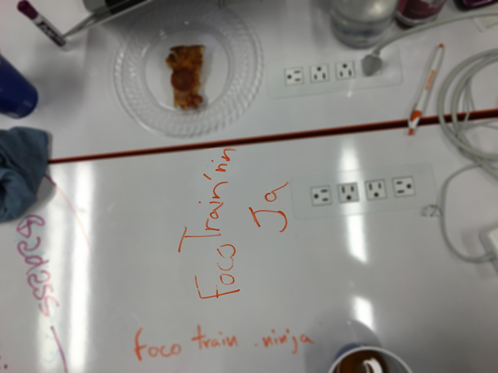

Luke Vance
Full Stack Developer
Blog
Lessons learned From My First Hackathon
Date: Friday June 15, 2016

- Quick shout out to my awesome teammates for their hard work and tequila drinking skills, without which these groundbreaking lessons would not have been possible.
Before my foray into the world of software, I imagined a hackathon to be inaccessible to the general public, where a secret handshake might be necessary to gain entrance. I imagined behind these locked doors would be something in between Houston’s mission control center during Apollo 13 and an officially sanctioned Dungeons and Dragons tournament. However, as my understanding of the software community has grown in the last year, I became enamored with the goal of attending one.
Finally, my chance came last week at the notable and highly acclaimed first official “Code For Foco Hack the Dot”, presented by Name.com. I know what you’re thinking, what was a hackathon noob like myself doing at an event like that? What’d I tell you, I go big.
The stage was huge and the press coverage unprecedented, yet the committee of organizers did a superb job in keeping the mood light and rowdy crowds under control. When the dust settled and the hordes of spectators were gone, I had a chance to reflect on the experience. I found it not only adrenaline pumping and unforgettable, but also significantly enlightening in regards to teamwork, problem solving, and rapid product development.
I came prepared and when the throngs of attendees poured in through the door I was nervously watching. I quickly picked out a team of elite engineers and creative thinkers from the four friends who took pity on my empty table. After my thorough evaluation, I was surprised to find that all of them qualified. To my utter surprise the host announced that the judging criteria would be creativity and humour. When she announced that the grand prize was that the winning project would remain on the domain/theme: FocoTrain.ninja, I nearly peed, but kept this to myself and we were off. With only 90 minutes to produce something worthy of presenting to the hungry onlookers, many of the team were anxious to begin working, but this brings us to lesson number 1.
Lesson 1: Question Your Assumptions
When faced with anything from choosing a name for a new git branch to a logo for your startup, your fate in success or failure can often be decided by the assumptions you make before beginning. Everyone knows that assumptions can be dangerous, but to begin solving a problem you almost always have to make some, so understanding what they are or better yet purposefully making and containing them is a great way to set yourself up for success.
In our case, possibly our best decision was to back up and ask ourselves, what is a focotrainninja? Soon we decided that although popular belief was that a clever combination of Fort Collins, Trains, and Ninjas was the theme the judges were interested in, we would go the unconventional route and rewrite our url as FocoTrainnin’ Ja. Spelling wasn’t in our favor and neither was our collective BAC, but still this new assumption opened up a whole new (Jamaican) world of possibilities and led us to more questions:
- Do people train to go to Jamaica?
- What do Jamaicans in Fort Collins train for?
- Can you train to take the train?
- Do ninjas need to tra-- nvm I’m still confused.
Lesson 2: Get started
This is especially relevant when you only have 58 minutes on the clock. But as many brilliant people have said before:
- “Done is better than perfect.”
- - Some Brilliant Person
So at this point, armed only with our assumption that practicality had nothing to do with the judges criteria and that Jamaica had to be involved rather than Ninjas, we just picked a topic that seemed reasonable to tackle with a super basic web app: can you take a train from Fort Collins to Jamaica? And started building.
Lesson 3: Keep It Simple
Even with a theme and a pretty specific vision for the product (a form that would determine whether or not you can take a train to Jamaica), and about 42min to build we were tempted early and often to add features to our deliverable. I am fully convinced that our success at this prestigious event came from our ability to allow zero fluff added and instead put just a tad polish on our functional product.
For those curious enough to examine our beautiful, award-winning web app, enjoy: Foco Trainnin’ Ja (Source Code)
Conclusion
I left this experience feeling that hackathons are not only a super fun way to practice working with teammates and completing a project under the gun, but that they can teach valuable lessons in project management and general problem solving techniques. I believe that most people (not just developers) could value greatly from participating in events like this no matter how short or silly and I for one look forward to attending many more myself.